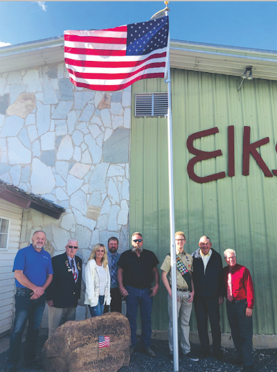

Preston
This Day in History
The Preston Elks Lodge has an updated look with its new flag pole and engraved boulder at its entrance. The effort was an Eagle Scout project completed by Kyler Gifford. Several entities came together to make the project a reality. Todd Goodsell of Franklin County Funeral Home made arrangements with Mark Bott Vault Company to engrave the boulder, which was donated and placed by Steve Wanner of Wanner Rock. Gifford installed the flag pole under the direction of Joel Palmer. “It was something we’ve needed for quite a while because the flags would wear out a lot faster because they were hitting the building,” said West. “We appreciate the Eagle scout project in addition to those who donated.”
Click here for the article.